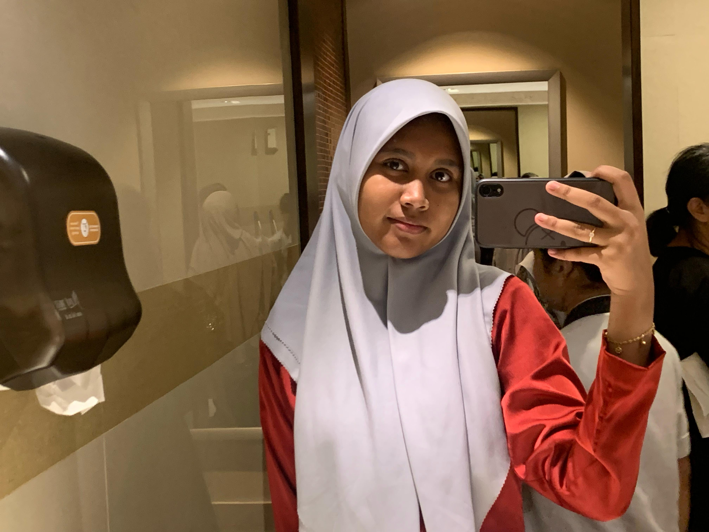
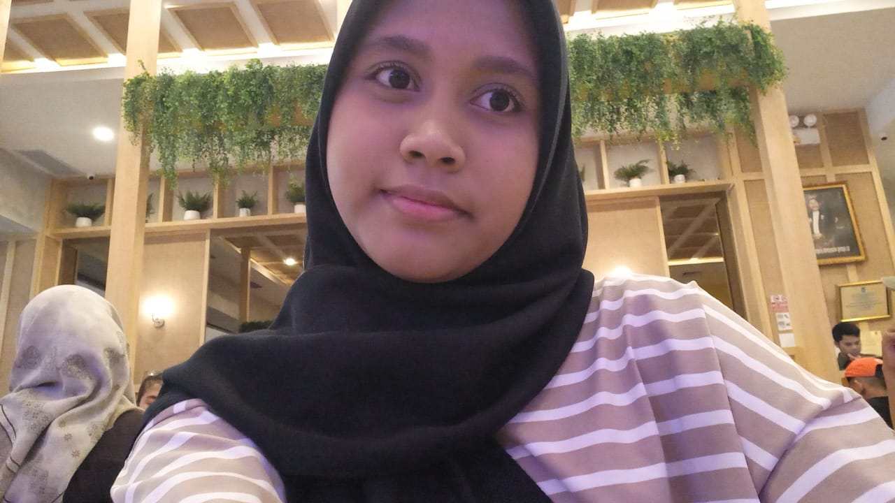
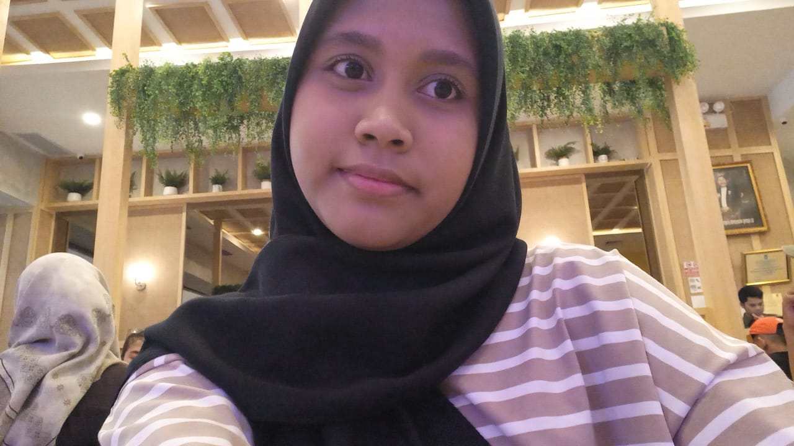
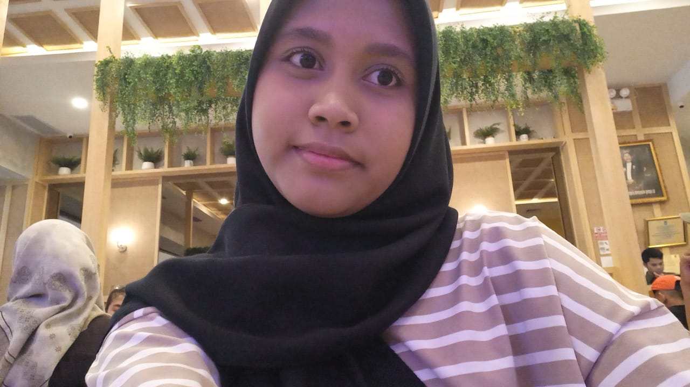

Tentang Saya
Halo Guys! Saya Aulia Nurul Afiza, mahasiswi semester awal yang memiliki ketertarikan besar di dunia teknologi dan data. Saat ini saya sedang menempuh pendidikan S1 Sistem Informasi di Universitas Internasional Batam.
Saya lahir di Batam pada 11 Juni 2007. Yaps.. saya 18 tahun sekarang hihi.
Lihat Hobiku

 


What I Love.
Coding
Belajar membuat website yang estetik.
Membaca
Saya suka membaca buku sejenis novel dan komik.
Travelling
Saya suka sekali mengunjungi tempat baru.
Menonton
Paling suka film yang genrenya action.
Mendengarkan Musik
Suka dengerin semua genre musik hihi.
Makan
Suka makanan yang unik. Terutama Seafood ❤️
"There are two paths you can take. Yours, or the path other choose for you."